Note: you are recommended to read an introduction to DBNs first, such as this book chapter.
Note that "temporal Bayesian network" would be a better name than "dynamic Bayesian network", since it is assumed that the model structure does not change, but the term DBN has become entrenched. We also normally assume that the parameters do not change, i.e., the model is time-invariant. However, we can always add extra hidden nodes to represent the current "regime", thereby creating mixtures of models to capture periodic non-stationarities.
There are some cases where the size of the state space can change over time, e.g., tracking a variable, but unknown, number of objects. In this case, we need to change the model structure over time. BNT does not support this.
We have "unrolled" the model for three "time slices" -- the structure and parameters are assumed to repeat as the model is unrolled further. Hence to specify a DBN, we need to define the intra-slice topology (within a slice), the inter-slice topology (between two slices), as well as the parameters for the first two slices. (Such a two-slice temporal Bayes net is often called a 2TBN.)
We can specify the topology as follows.
intra = zeros(2); intra(1,2) = 1; % node 1 in slice t connects to node 2 in slice t inter = zeros(2); inter(1,1) = 1; % node 1 in slice t-1 connects to node 1 in slice tWe can specify the parameters as follows, where for simplicity we assume the observed node is discrete.
Q = 2; % num hidden states
O = 2; % num observable symbols
ns = [Q O];
dnodes = 1:2;
bnet = mk_dbn(intra, inter, ns, 'discrete', dnodes);
for i=1:4
bnet.CPD{i} = tabular_CPD(bnet, i);
end
We assume the distributions P(X(t) | X(t-1)) and P(Y(t) | X(t)) are independent of t for t > 1. Hence the CPD for nodes 5, 7, ... is the same as for node 3, so we say they are in the same equivalence class, with node 3 being the "representative" for this class. In other words, we have tied the parameters for nodes 3, 5, 7, ... Similarly, nodes 4, 6, 8, ... are tied. Note, however, that (the parameters for) nodes 1 and 2 are not tied to subsequent slices.
Above we assumed the observation model P(Y(t) | X(t)) is independent of t for t>1, but it is conventional to assume this is true for all t. So we would like to put nodes 2, 4, 6, ... all in the same class. We can do this by explicitely defining the equivalence classes, as follows (see here for more details on parameter tying).
We define eclass1(i) to be the equivalence class that node i in slice 1 belongs to. Similarly, we define eclass2(i) to be the equivalence class that node i in slice 2, 3, ..., belongs to. For an HMM, we have
eclass1 = [1 2]; eclass2 = [3 2]; eclass = [eclass1 eclass2];This ties the observation model across slices, since e.g., eclass(4) = eclass(2) = 2.
By default, eclass1 = 1:ss, and eclass2 = (1:ss)+ss, where ss = slice size = the number of nodes per slice. But by using the above tieing pattern, we now only have 3 CPDs to specify, instead of 4:
bnet = mk_dbn(intra, inter, ns, 'discrete', dnodes, 'eclass1', eclass1, 'eclass2', eclass2);
prior0 = normalise(rand(Q,1));
transmat0 = mk_stochastic(rand(Q,Q));
obsmat0 = mk_stochastic(rand(Q,O));
bnet.CPD{1} = tabular_CPD(bnet, 1, prior0);
bnet.CPD{2} = tabular_CPD(bnet, 2, obsmat0);
bnet.CPD{3} = tabular_CPD(bnet, 3, transmat0);
We discuss how to do inference and learning on this model
below.
(See also
my HMM toolbox, which is included with BNT.)
Some common variants on HMMs are shown below. BNT can handle all of these.
| 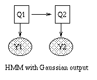 | 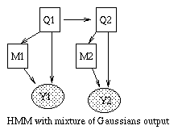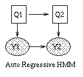 |
| 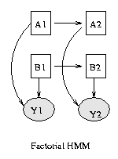 | 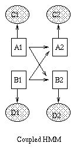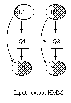 |
x(t+1) = A*x(t) + w(t), w ~ N(0, Q), x(0) ~ N(init_x, init_V) y(t) = C*x(t) + v(t), v ~ N(0, R)Some simple variants are shown below.
| 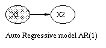 | 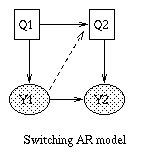 | 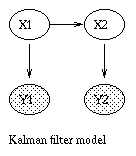 | 
|
We can create a regular LDS in BNT as follows.
intra = zeros(2);
intra(1,2) = 1;
inter = zeros(2);
inter(1,1) = 1;
n = 2;
X = 2; % size of hidden state
Y = 2; % size of observable state
ns = [X Y];
dnodes = [];
onodes = [2];
eclass1 = [1 2];
eclass2 = [3 2];
bnet = mk_dbn(intra, inter, ns, 'discrete', dnodes, 'eclass1', eclass1, 'eclass2', eclass2);
x0 = rand(X,1);
V0 = eye(X); % must be positive semi definite!
C0 = rand(Y,X);
R0 = eye(Y);
A0 = rand(X,X);
Q0 = eye(X);
bnet.CPD{1} = gaussian_CPD(bnet, 1, 'mean', x0, 'cov', V0, 'cov_prior_weight', 0);
bnet.CPD{2} = gaussian_CPD(bnet, 2, 'mean', zeros(Y,1), 'cov', R0, 'weights', C0, ...
'clamp_mean', 1, 'cov_prior_weight', 0);
bnet.CPD{3} = gaussian_CPD(bnet, 3, 'mean', zeros(X,1), 'cov', Q0, 'weights', A0, ...
'clamp_mean', 1, 'cov_prior_weight', 0);
We discuss how to do inference and learning on this model
below.
(See also
my Kalman filter toolbox, which is included with BNT.)
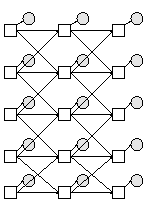
We can make this using the function
Q = 2; % binary hidden nodes discrete_obs = 0; % cts observed nodes Y = 1; % scalar observed nodes bnet = mk_chmm(N, Q, Y, discrete_obs);
ss = 12; % slice size
intra = zeros(ss);
intra(1,9) = 1;
intra(3,10) = 1;
intra(4,11) = 1;
intra(8,12) = 1;
inter = zeros(ss);
inter(1, [1 3]) = 1; % node 1 in slice 1 connects to nodes 1 and 3 in slice 2
inter(2, [2 3 7]) = 1;
inter(3, [3 4 5]) = 1;
inter(4, [3 4 6]) = 1;
inter(5, [3 5 6]) = 1;
inter(6, [4 5 6]) = 1;
inter(7, [7 8]) = 1;
inter(8, [6 7 8]) = 1;
onodes = 9:12; % observed
dnodes = 1:ss; % discrete
ns = 2*ones(1,ss); % binary nodes
eclass1 = 1:12;
eclass2 = [13:20 9:12];
eclass = [eclass1 eclass2];
bnet = mk_dbn(intra, inter, ns, 'discrete', dnodes, 'eclass1', eclass1, 'eclass2', eclass2);
for e=1:max(eclass)
bnet.CPD{e} = tabular_CPD(bnet, e);
end
We have tied the observation parameters across all slices.
Click here for a more complex example
of parameter tieing.
Since this topology is so complicated, it is useful to be able to refer to the nodes by name, instead of number.
names = {'LeftClr', 'RightClr', 'LatAct', ... 'Bclr', 'BYdotDiff'};
ss = length(names);
We can specify the intra-slice topology using a cell array as follows,
where each row specifies a connection between two named nodes:
intrac = {...
'LeftClr', 'LeftClrSens';
'RightClr', 'RightClrSens';
...
'BYdotDiff', 'BcloseFast'};
Finally, we can convert this cell array to an adjacency matrix using
the following function:
[intra, names] = mk_adj_mat(intrac, names, 1);This function also permutes the names so that they are in topological order. Given this ordering of the names, we can make the inter-slice connectivity matrix as follows:
interc = {...
'LeftClr', 'LeftClr';
'LeftClr', 'LatAct';
...
'FBStatus', 'LatAct'};
inter = mk_adj_mat(interc, names, 0);
To refer to a node, we must know its number, which can be computed as
in the following example:
obs = {'LeftClrSens', 'RightClrSens', 'TurnSignalSens', 'XdotSens', 'YdotSens', 'FYdotDiffSens', ...
'FclrSens', 'BXdotSens', 'BclrSens', 'BYdotDiffSens'};
for i=1:length(obs)
onodes(i) = strmatch(obs{i}, names);
end
onodes = sort(onodes);
(We sort the onodes since most BNT routines assume that set-valued
arguments are in sorted order.)
We can now make the DBN:
dnodes = 1:ss; ns = 2*ones(1,ss); % binary nodes bnet = mk_dbn(intra, inter, ns, 'iscrete', dnodes);To specify the parameters, we must know the order of the parents. See the function BNT/general/mk_named_CPT for a way to do this in the case of tabular nodes. For simplicity, we just generate random parameters:
for i=1:2*ss
bnet.CPD{i} = tabular_CPD(bnet, i);
end
A complete version of this example is available in BNT/examples/dynamic/bat1.m.
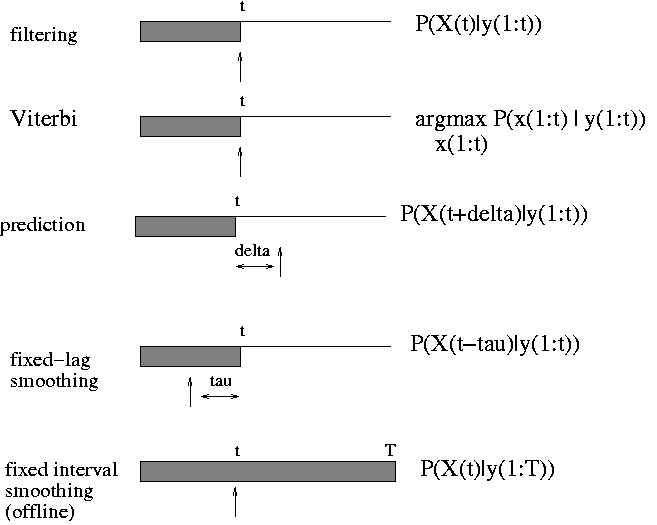
BNT can currently only handle offline smoothing. (The HMM engine handles filtering and, to a limited extent, prediction.) The usage is similar to static inference engines, except now the evidence is a 2D cell array of size ss*T, where ss is the number of nodes per slice (ss = slice sizee) and T is the number of slices. Also, 'marginal_nodes' takes two arguments, the nodes and the time-slice. For example, to compute P(X(i,t) | y(:,1:T)), we proceed as follows (where onodes are the indices of the observedd nodes in each slice, which correspond to y):
ev = sample_dbn(bnet, T); evidence = cell(ss,T); evidence(onodes,:) = ev(onodes, :); % all cells besides onodes are empty [engine, ll] = enter_evidence(engine, evidence); marg = marginal_nodes(engine, i, t);
A DBN can be converted to an HMM if all the hidden nodes are discrete. In this case, you can use hmm_inf_engine. This is faster than jtree for small models because the constant factors of the algorithm are lower, but can be exponentially slower for models with many variables (e.g., > 6 binary hidden nodes).
The use of both jtree_dbn_inf_engine and hmm_inf_engine is deprecated. A better approach is to construct a smoother engine out of lower-level engines, which implement forward/backward operators. You can create these engines as follows.
engine = smoother_engine(hmm_2TBN_inf_engine(bnet)); or engine = smoother_engine(jtree_2TBN_inf_engine(bnet));You then call them in the usual way:
engine = enter_evidence(engine, evidence); m = marginal_nodes(engine, nodes, t);Note: you must declare the observed nodes in the bnet before using hmm_2TBN_inf_engine.
Unfortunately, when all the hiddden nodes are discrete, exact inference takes O(2^n) time, where n is the number of hidden nodes per slice, even if the model is sparse. The basic reason for this is that two nodes become correlated, even if there is no direct connection between them in the 2TBN, by virtue of sharing common ancestors in the past. Hence we need to use approximations.
A popular approximate inference algorithm for discrete DBNs, known as BK, is described in
engine = bk_inf_engine(bnet, { [1 2], [3 4 5 6], [7 8] });
This engine can now be used just like the jtree engine.
Two special cases of the BK algorithm are supported: 'ff' (fully
factored) means each node has its own cluster, and 'exact' means there
is 1 cluster that contains the whole slice. These can be created as
follows:
engine = bk_inf_engine(bnet, 'ff'); engine = bk_inf_engine(bnet, 'exact');For pedagogical purposes, an implementation of BK-FF that uses an HMM instead of junction tree is available at bk_ff_hmm_inf_engine.
For nonlinear systems with Gaussian noise, the unscented Kalman filter (UKF), due to Julier and Uhlmann, is far superior to the well-known extended Kalman filter (EKF), both in theory and practice. The key idea of the UKF is that it is easier to estimate a Gaussian distribution from a set of points than to approximate an arbitrary non-linear function. We start with points that are plus/minus sigma away from the mean along each dimension, and then pipe them through the nonlinearity, and then fit a Gaussian to the transformed points. (No need to compute Jacobians, unlike the EKF!)
For systems with non-Gaussian noise, I recommend Particle filtering (PF), which is a popular sequential Monte Carlo technique.
The EKF can be used as a proposal distribution for a PF. This method is better than either one alone. See The Unscented Particle Filter, by R van der Merwe, A Doucet, JFG de Freitas and E Wan, May 2000. Matlab software for the UPF is also available.
Note: none of this software is part of BNT.
ncases = 2;
cases = cell(1, ncases);
for i=1:ncases
ev = sample_dbn(bnet, T);
cases{i} = cell(ss,T);
cases{i}(onodes,:) = ev(onodes, :);
end
[bnet2, LLtrace] = learn_params_dbn_em(engine, cases, 'max_iter', 10);
If the observed node is vector-valued and stored in an OxT array, you
need to assign each vector to a single cell, as in the following
example.
data = [xpos(:)'; ypos(:)'];
ncases = 1;
cases = cell(1, ncases);
onodes = bnet.observed;
for i=1:ncases
cases{i} = cell(ss,T);
cases{i}(onodes,:) = num2cell(data(:,1:T), 1);
end
For a complete code listing of how to do EM in a simple DBN, click here.
inter = learn_struct_dbn_reveal(cases, ns, max_fan_in, penalty)A full example is given in BNT/examples/dynamic/reveal1.m. Setting the penalty term to 0 gives the maximum likelihood model; this is equivalent to maximizing the mutual information between parents and child (in the bioinformatics community, this is known as the REVEAL algorithm). A non-zero penalty invokes the BIC criterion, which lessens the chance of overfitting.